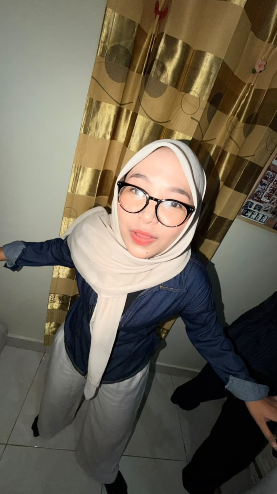
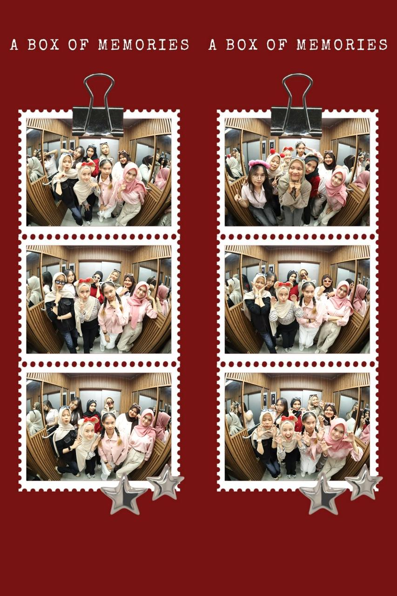

BIODATA

NAMA : Bunga Mutiara Magfirah
NIM : 2511102441133
JURUSAN : Teknik Informatika
HOBI : Berenang, Menonton
FAV FOOD : Seafood, Cheese Cake
FRIENDSHIP

Semester 3 Teknik Informatika itu emang lagi seru-serunya sekaligus bikin pusing, apalagi pas udah ketemu tugas kodingan yang numpuk dan praktikum yang padet. Tapi punya geng berdelapan kaya gini tuh bener-bener penolong banget. Abis pusing nyari bug atau pusing matkul, kalian bisa langsung melipir bareng buat refreshing, ketawa-tawa, dan foto-foto kaya di photobooth ini. Liat aja ekspresi anak-anaknya yang rame dan energy-nya lepas banget, dari yang suka pose kocak pake bando, pose cakar, sampai yang tampil manis. Momen kebersamaan bareng temen-temen kaya gini yang bikin perjuangan kuliah TI berasa lebih ringan dan penuh kenangan seru.
MY FAVORITE MOVIE

Ini sih fix film favorit sepanjang masa! Spirited Away tuh tipe film yang nggak pernah bosen diputar berulang kali, apalagi pas lagi butuh healing abis pusing sama praktikum dan kodingan.Dunia magic-nya Studio Ghibli di film ini bener-bener gak ada tandingannya. Dari karakter Chihiro yang perkembangannya dapet banget—dari anak penakut jadi cewek mandiri yang pemberani—sampai sosok misterius kayak Kaonashi (No-Face) dan suasana rumah mandi rohnya yang estetik parah. Belum lagi soundtrack mahakarya Joe Hisaishi yang selalu bikin merinding dan nostalgia tiap kali denger. Pokoknya ini tuh comfort movie nomor satu. Tiap kali pengen kabur sejenak dari penatnya dunia nyata, tinggal putar film ini dan langsung tenggelam sama petualangannya Chihiro.